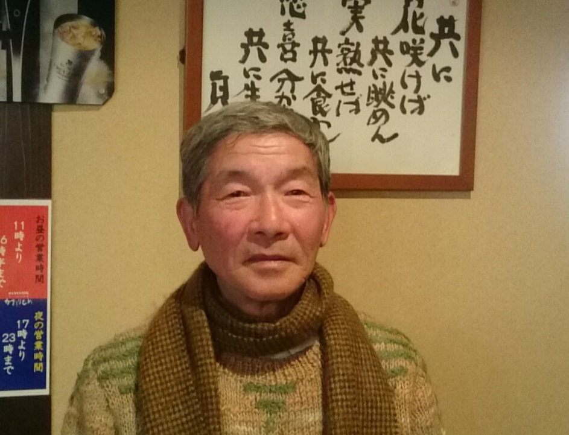

平尾行隆（ひらお ゆきたか）
高松高校昭和34年卒
(Last updated:2017.3)
プロフィール

昭和34年3月 高松高校卒業
香川大学経済学部卒業後、三井物産に就職。
1974年から1978年の4年間、日系合繊織物工場に取締役として派遣され、エルサルバドルに住む。
サン＝テグジュペリの妻コンスエロが書いた手記を読んだことがきっかけで、物語の舞台といえるエルサルバドルに「星の王子さま」ミュージアムを建設したいと考え、協力している。
日経新聞より
以下、日経新聞最終面の『文化』に掲載された文章を要約します。
還暦を過ぎた2000年、ある月刊誌に掲載していたサン＝テグジュペリの妻コンスエロが書いた手記を読み、続けて『星の王子さま』を読み、詩的な文章と人生の真理をつく深遠な内容に心を揺さぶられた。
かねて中南米のスペイン語圏との文化交流に携わりたいと考えていたこともあり、コンスエロの伝記を書こうと、翌年からエルサルバドルを頻繁に訪れるようになった。
コンスエロの故郷アルメニア市を訪れた際、３つの山を見て、星の王子さまが愛した故郷の３つの火山があることに驚く。抒情に満ちた物語の世界は実在したのである。
物語の舞台となったエルサルバドルに「星の王子さま」ミュージアムを建設したい。その一念でコンスエロの調査を進めてきた。
「星の王子さま」の影の作者ともいえるコンスエロの名をもっと広めるため、ミュージアムを建設し、伝記を執筆することが私の使命だと思っている。
執筆
『森をつくったのはだれ? (科学で環境探検)』 共著 大日本図書(1999年)